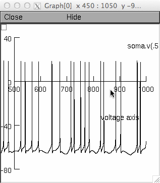

This is the readme for the model associated with the paper:
S. K. Sudhakar, B. Torben-Nielsen, E. De Schutter: Cerebellar nuclear
neurons use time and rate coding to transmit Purkinje neuron
pauses. PLoS Computational Biology in press
The CN neuron model is based on previously published model,
V. Steuber, N.W. Schultheiss, R.A. Silver, E. De Schutter, D. Jaeger,
Determinants of synaptic integration and heterogeneity in rebound
firing explored with data-driven models of deep cerebellar nucleus
cells., J. Comput. Neurosci. 30 (2011)
633–58. doi:10.1007/s10827-010-0282-z.
Download, extract, and compile the mod files with the "nrnivmodl"
command after cd'ing to the extracted folder. For more help on
downloading and running NEURON models from ModelDB see:
http://senselab.med.yale.edu/ModelDB/NEURON_DwnldGuide.html
The following commands reproduces figure 1 from the paper (Sudhakar et al)
Fig 1a:
nrngui -c "x=1" DCN_init_model2_lowgain.hoc
(Note: this is the same simulation as provided in the auto-launch from
ModelDB) After a brief wait you should see an image like this on the
screen:

Fig 1b:
nrngui -c "x=1" DCN_init_model2_medgain.hoc
Fig 1c:
nrngui -c "x=1" DCN_init_model2_highgain.hoc
Model output:
m2_a1.bin -- Membrane potential traces of the model run for 1000 ms
m2_b1.bin -- Spike times of the model run for 1000 ms
The following data files represent model input.
datasp1.dat : spike times of 200 Purkinje cells for Pause beginning
synchronization
l1.dat: Length of spike times of each Purkinje cell
datasp_ex1.dat: Poisson spike times of 100 mossy fibers
l_ex1.dat: Length of spike times of each mossy fiber